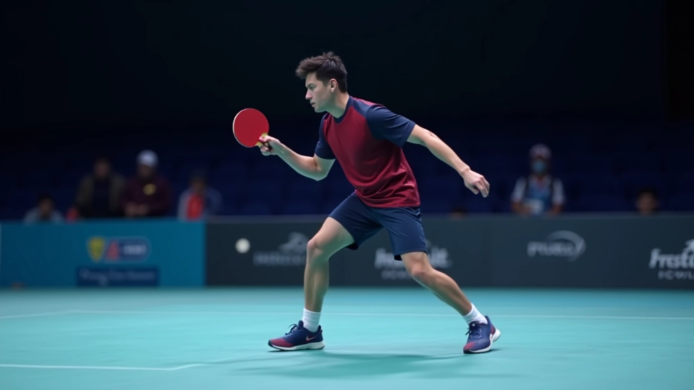
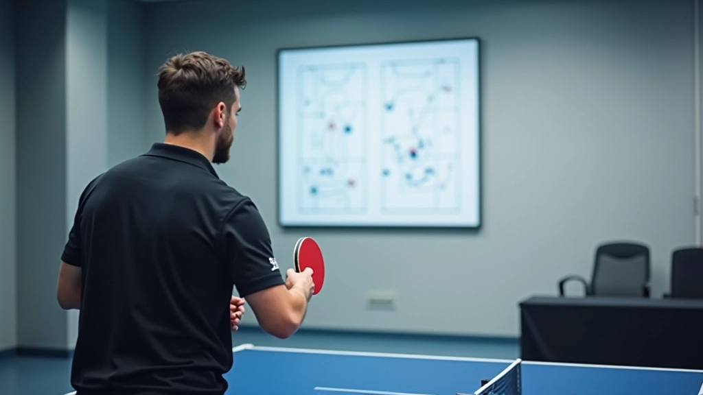
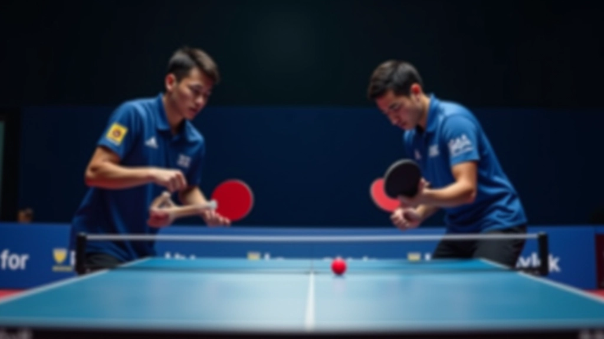
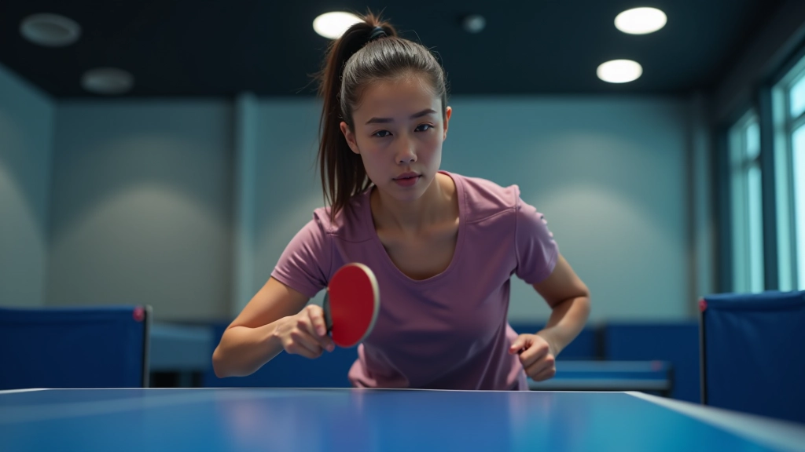

أساسيات التنسيق في المراكز المختلفة
تعلم كيفية التنسيق الفعال بين اللاعب الأمامي والخلفي، وتوزيع المسؤوليات على الملعب
تدريبات متقدمة للحركة السريعة والتغطية المتبادلة بين الزميلين لتقليل الثغرات على الملعب
الفريق القوي في تنس الطاولة الزوجي لا يعتمد على المهارة الفردية فقط — يعتمد على التنسيق. عندما تتحرك أنت وزميلك بتناغم، تغطيان معاً كل منطقة على الملعب. هذا يعني ثغرات أقل، دفاع أقوى، وفرص هجوم أكثر.
التمارين التي ستتعلمها هنا ركزت على السرعة والتواصل. لا يوجد وقت للتفكير — يجب أن تتحرك بغريزة. نحن سنعلمك كيفية تطوير تلك الغريزة من خلال تكرار منظم.

هذا التمرين يركز على الحركة الجانبية بين اللاعبين. أحدكما يبقى في المركز بينما الآخر ينزلق جانباً لتغطية الكرات البعيدة. الهدف؟ تغطية الملعب بالكامل دون ترك ثغرات.
ابدأ بسرعة بطيئة — كرة واحدة في كل مرة. ركز على وضعية القدمين والتوازن. بعد 30 كرة متتالية بدون أخطاء، زد السرعة. التمرين الصحيح يتطلب حوالي 3 دقائق، وتكرره 4 مرات مع فترات راحة 60 ثانية.

هذه التمارين موضوعة للأغراض التعليمية والتدريبية. نتائج التحسن تختلف من شخص لآخر حسب المستوى الحالي والممارسة المنتظمة. ننصح باستشارة مدرب متخصص قبل البدء في أي برنامج تدريبي جديد، خاصة إذا كان لديك إصابة سابقة أو قيود صحية.

هذا التمرين يعلمك كيفية التبديل السريع بين الدفاع والهجوم. اللاعب الأول يدافع عن الخط الخلفي بينما اللاعب الثاني ينتقل للأمام لضرب الكرات القصيرة. عندما تصل كرة قوية، يتبديلان الأدوار.
المفتاح هو السرعة والاتصال البصري. لا تحتاج إلى كلمات — نظرة واحدة تكفي. جرب هذا التمرين مع 50 كرة متتالية، وراقب كم مرة تتمكنان من التبديل بنجاح.
تغطية الزوايا هي أحد أصعب المهام. يرسل خصمك الكرة للزاوية البعيدة — يجب أن تصل إليها. لكن ماذا عن زميلك؟ يجب أن يغطي الخط الآخر في نفس اللحظة.
التمرين: قف أنت وزميلك في المركز. يرسل المدرب الكرات للزوايا الأربع بترتيب معين. أنت تتحرك لليمين، زميلك يغطي اليسار. ثم تتبادلان. 40 كرة لكل اتجاه تكفي. بعد أسبوعين من التكرار، ستصبح الحركة تلقائية.
لا تنسَ العودة للمركز بعد كل ضربة. معظم الأخطاء تحدث لأن اللاعبين يبقون في الزاوية بدلاً من العودة.


عندما تحصل على كرة ضعيفة من الخصم، يجب أن تغلق بسرعة على الشبكة لإنهاء النقطة. لكن زميلك يجب أن يكون جاهزاً للدفاع إذا عادت الكرة. التنسيق هنا حاسم جداً.
التمرين: زميلك يرسل كرة قصيرة، أنت تتقدم بخطوات سريعة لضربها. لكن لا تهاجم كل كرة — أحياناً تحتاج فقط لإرسال كرة قريبة من الشبكة. زميلك يقف خلفك مباشرة، جاهز للرد السريع. كرر هذا 60 مرة، وستلاحظ تحسناً واضحاً.
السرعة تأتي لاحقاً. الآن ركز على الصحة. حركة واحدة صحيحة أفضل من 10 حركات مشوشة.
تحدث مع زميلك — حتى لو كانت كلمة واحدة. "يميني"، "يسارك"، "الخط الخلفي". هذا يزيل الالتباس.
كل تمرين يحتاج 3-4 مجموعات على الأقل. فترة راحة 60 ثانية بين المجموعات تكفي للاستعادة.
عد الكرات الناجحة. أسبوع أول: 25 كرة متتالية. أسبوع ثالث: 50 كرة. هذا هو التقدم الحقيقي.
الحركة والتغطية ليست موهبة — إنها مهارة. كل تمرين من هذه التمارين يمكنك البدء به اليوم. اختر واحداً، مارسه لمدة أسبوع، ثم انتقل للتمرين التالي. بعد شهر، ستلاحظ أنك وزميلك تتحركان كوحدة واحدة.
الأهم؟ الاستمرار. لا يوجد تمرين سحري يعطيك النتائج بين عشية وضحاها. لكن الممارسة المنتظمة والمنظمة ستحسّن مستواك بشكل ملحوظ. والآن أنت تعرف بالضبط ماذا تفعل.
استكمل رحلتك في تحسين التنسيق الزوجي مع أدلتنا الأخرى المتخصصة
اقرأ المزيد
فريق المحتوى والمراجعة
تم إعداده بواسطة فريق شمس الطاولة للمحتوى، المتخصص في أدلة عملية وسهلة المتابعة لتحسين التنسيق في لعب الزوجي.
تعلم كيفية التنسيق الفعال بين اللاعب الأمامي والخلفي، وتوزيع المسؤوليات على الملعب

تطوير نظام إشارات واضح بينك وبين زميلك، مع تقنيات التواصل الصامت

بناء خطط هجومية قوية مع زميلك، وتنفيذ تسلسلات ضربات منسقة